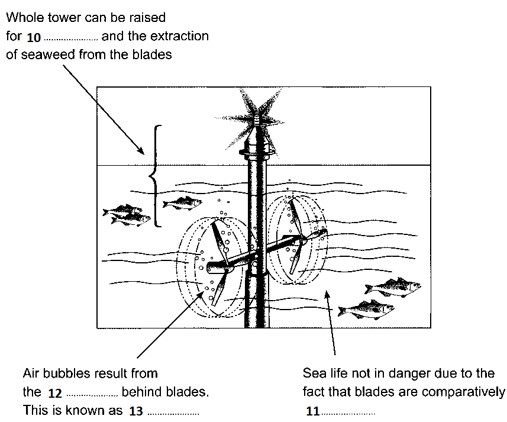

Tidal Power

Undersea turbines which produce electricity from the tides are set to become an important source of renewable energy for Britain. It is still too early to predict the extent of the impact they may have, but all the signs are that they will play a significant role in the future
A
Operating on the same principle as wind turbines, the power in sea turbines comes from tidal currents which turn blades similar to ships’ propellers, but, unlike wind, the tides are predictable and the power input is constant. The technology raises the prospect of Britain becoming self-sufficient in renewable energy and drastically reducing its carbon dioxide emissions. If tide, wind and wave power are all developed, Britain would be able to close gas, coal and nuclear power plants and export renewable power to other parts of Europe. Unlike wind power, which Britain originally developed and then abandoned for 20 years allowing the Dutch to make it a major industry, undersea turbines could become a big export earner to island nations such as Japan and New Zealand.
B
Tidal sites have already been identified that will produce one sixth or more of the UK’s power - and at prices competitive with modern gas turbines and undercutting those of the already ailing nuclear industry. One site alone, the Pentland Firth, between Orkney and mainland Scotland, could produce 10% of the country’s electricity with banks of turbines under the sea, and another at Alderney in the Channel Islands three times the 1,200 megawatts of Britain’s largest and newest nuclear plant, Sizewell B, in Suffolk. Other sites identified include the Bristol Channel and the west coast of Scotland, particularly the channel between Campbeltown and Northern Ireland.
C
Work on designs for the new turbine blades and sites are well advanced at the University of Southampton’s sustainable energy research group. The first station is expected to be installed off Lynmouth in Devon shortly to test the technology in a venture jointly funded by the department of Trade and Industry and the European Union. AbuBakr Bahaj, in charge of the Southampton research, said: The prospects for energy from tidal currents are far better than from wind because the flows of water are predictable and constant. The technology for dealing with the hostile saline environment under the sea has been developed in the North Sea oil industry and much is already known about turbine blade design, because of wind power and ship propellers. There are a few technical difficulties, but I believe in the next five to ten years we will be installing commercial marine turbine farms.’ Southampton has been awarded £215,000 over three years to develop the turbines and is working with Marine Current Turbines, a subsidiary of IT power, on the Lynmouth project. EU research has now identified 106 potential sites for tidal power, 80% round the coasts of Britain. The best sites are between islands or around heavily indented coasts where there are strong tidal currents.
D
A marine turbine blade needs to be only one third of the size of a wind generator to produce three times as much power. The blades will be about 20 metres in diameter, so around 30 metres of water is required. Unlike wind power, there are unlikely to be environmental objections. Fish and other creatures are thought unlikely to be at risk from the relatively slow-turning blades. Each turbine will be mounted on a tower which will connect to the national power supply grid via underwater cables. The towers will stick out of the water and be lit, to warn shipping, and also be designed to be lifted out of the water for maintenance and to clean seaweed from the blades.
E
Dr Bahaj has done most work on the Alderney site, where there are powerful currents. The single undersea turbine farm would produce far more power than needed for the Channel Islands and most would be fed into the French Grid and be re-imported into Britain via the cable under the Channel.
F
One technical difficulty is cavitation, where low pressure behind a turning blade causes air bubbles. These can cause vibration and damage the blades of the turbines. Dr Bahaj said: ‘We have to test a number of blade types to avoid this happening or at least make sure it does not damage the turbines or reduce performance. Another slight concern is submerged debris floating into the blades. So far we do not know how much of a problem it might be. We will have to make the turbines robust because the sea is a hostile environment, but all the signs that we can do it are good.’
Questions 1-4
Reading Passage has six paragraphs, A-F.
Which paragraph contains the following information?
Write the correct letter, A-F, in boxes 1-4 on your answer sheet.
NB You may use any letter more than once.
1 the location of the first test site
2 a way of bringing the power produced on one site back into Britain
3 a reference to a previous attempt by Britain to find an alternative source of energy
4 mention of the possibility of applying technology from another industry
Questions 5-9
Choose FIVE letters, A-J.
Write the correct letters in boxes 5-9 on your answer sheet.
Which FIVE of the following claims about tidal power are made by the writer?
A It is a more reliable source of energy than wind power.
B It would replace all other forms of energy in Britain.
C Its introduction has come as a result of public pressure.
D It would cut down on air pollution.
E It could contribute to the closure of many existing power stations in Britain.
F It could be a means of increasing national income.
G It could face a lot of resistance from other fuel industries.
H It could be sold more cheaply than any other type of fuel.
I It could compensate for the shortage of inland sites for energy production.
J It is best produced in the vicinity of coastlines with particular features.
Questions 10-13
Label the diagram below.
Choose NO MORE THAN TWO WORDS from the passage for each answer.
Write your answers in boxes 10-13 on your answer sheet.
An Undersea Turbine

10
11
12
13
---End of the Test---
Please Submit to view your score, solution and explanations.